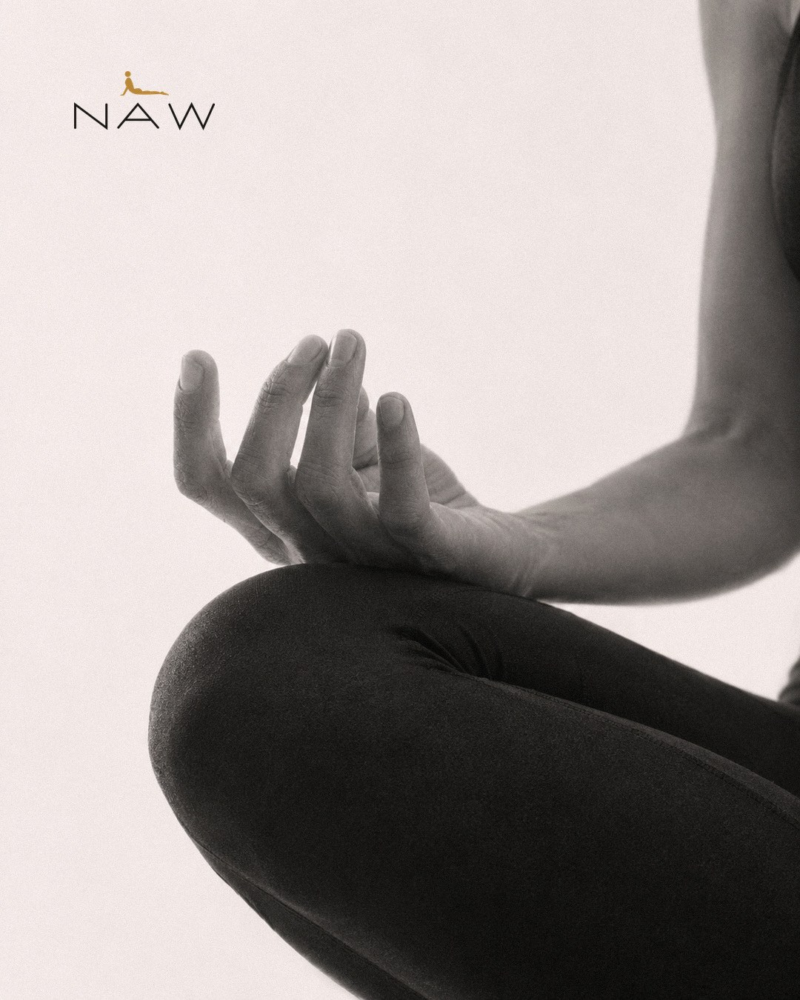
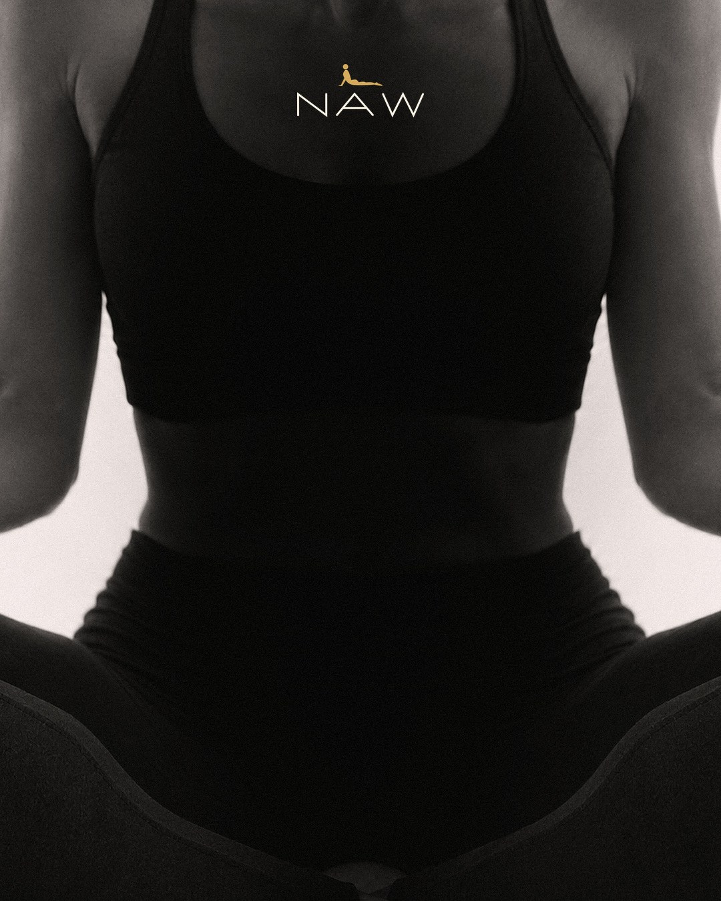
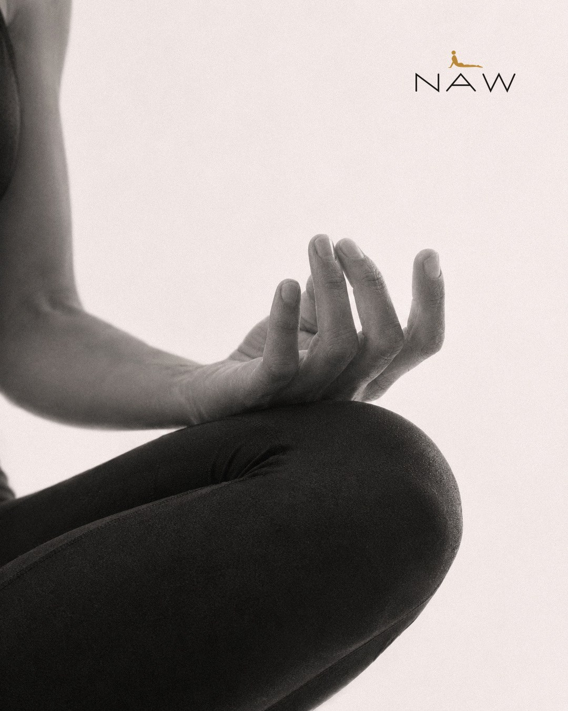

Las piezas para el Instagram de NAW Women, listas para subir. Aquí se irá añadiendo todo el contenido del perfil.
Una sola foto de la postura, cortada como un puzle: a la izquierda la mano en mudra, a la derecha la misma en espejo y en el centro el torso, en sombra, para mantener la intriga y enseñar poco el producto. Todo en blanco y negro, con el logo de NAW arriba en las tres piezas. Las piezas están medidas para que encajen justo en la cuadrícula del perfil.



Así se ven en el perfil (recorte 3:4 de la cuadrícula). Formato de cada post: 1080 × 1350. Se suben y se fijan en orden derecha, centro, izquierda, para que en el perfil se lean de izquierda a derecha.